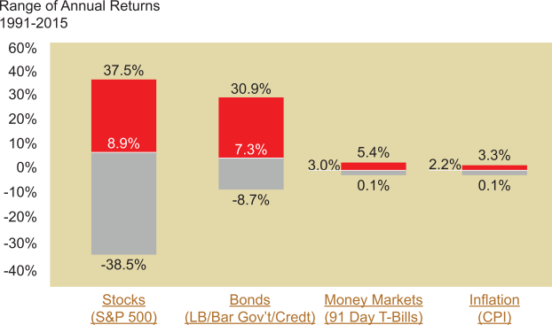

While inflation risk can deflate the value of the dollar substantially, market risk, or the fluctuating rates of return, can also affect investment returns. This is risk that is derived simply from association with the market.
Fluctuations in the overall market are generally reflected in individual portfolios. It can be observed by considering the fluctuating annual rates of return for stocks, bonds, and money market securities that occurred during the past 25 years. This is illustrated in the chart below, which shows the maximum and minimum annual returns, as well as their average, for each of these common asset classes during the past 25 years. Clearly, the potential risk associated with any given year is substantial. But the market risk is not the same for all asset classes.
Click each bar graph title for an explanation of the returns of each Asset Class.
